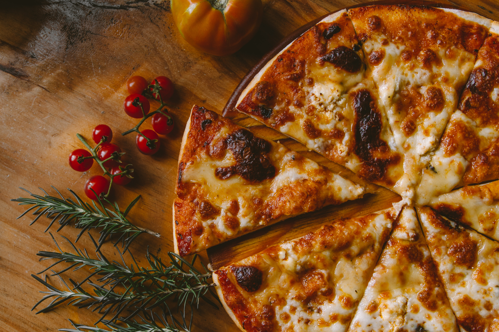

YAPILIŞ

- Fırını 260 dereceye ayarlayıp önceden ısıtma işlemini başlatın
- Un ve yoğurdu bir kapta karıştırın ve hamuru yaklaşık 8-10 dakika kadar yoğurun. Hamur çok yapışkan hale gelirse biraz daha un ekleyin.
- Pişirme spreyini pişirme tepsisine püskürtün ve hamuru tepsiye yayın.
- Önceden ısıttığımız fırına tepsiyi yerleştirin ve 5-7 dakika kadar pişirin.